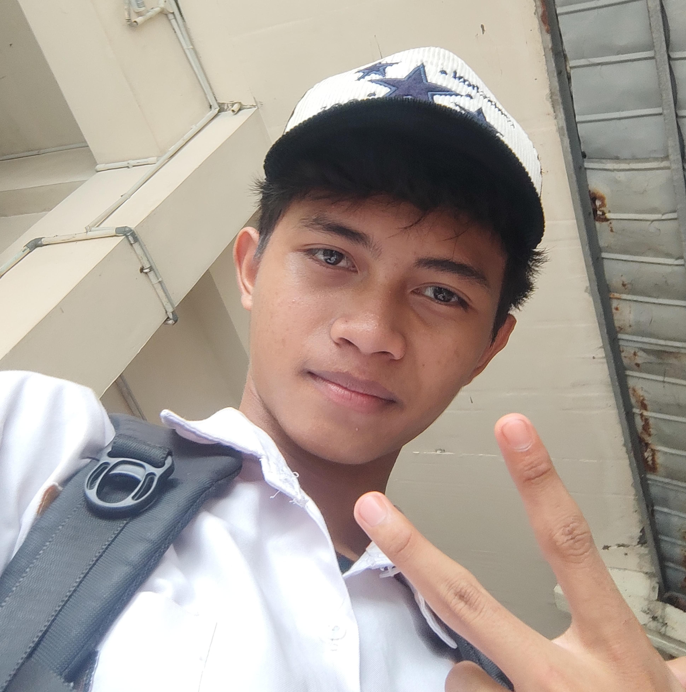

biodata
Umur: 17 tahun
Hobi: Olahraga
alamat : perumahan bintaro angkasa
telepon : 087878676575
Bastian Wisnu Hidayat, atau biasa dipanggil Wisnu, adalah anak ketiga dari empat bersaudara. Dia lahir pada 17 Desember 2007. Kehidupannya penuh dengan lika-liku, meskipun usianya masih muda. Sejak kecil, Wisnu sudah belajar menghadapi kenyataan hidup yang tak selalu mudah. Ia berasal dari keluarga broken home, dan sejak usia dini, ia lebih banyak menghabiskan waktu bersama neneknya daripada orang tuanya.
Kehidupan Wisnu bersama neneknya terasa penuh dengan kasih sayang. Nenek adalah orang yang selalu ada untuknya, mengajarkan nilai-nilai kehidupan, dan memberi dukungan emosional. Namun, meskipun penuh kasih, ada saat-saat ketika Wisnu merasa kesepian. Ia merindukan kehadiran kedua orang tuanya yang sibuk dengan urusan mereka sendiri. Di rumah nenek, ia belajar untuk mandiri dan menghadapi dunia yang kadang terasa keras.
Kehidupan Wisnu berubah saat ia berusia 15 tahun. Saat itu, ia pindah ke Banten untuk tinggal bersama kakak perempuannya, Vera, yang sudah lebih dulu merantau ke sana. Vera, yang selalu menjadi sosok kakak yang penuh perhatian dan peduli, menerima Wisnu dengan tangan terbuka. Meskipun awalnya Wisnu merasa canggung dan sulit beradaptasi, lama-kelamaan ia mulai merasa lebih nyaman. Vera membantu Wisnu menyesuaikan diri dengan kehidupan baru, dan mereka menjadi semakin dekat.
Meski menghadapi berbagai perubahan dalam hidupnya, Wisnu tetap dikenal sebagai sosok yang pendiam, terutama kepada orang yang belum terlalu dikenalnya. Ia bukan tipe orang yang langsung bisa terbuka atau berbicara banyak dengan orang baru. Namun, di sisi lain, kepada teman-temannya yang sudah akrab, Wisnu menjadi sosok yang ceria dan usil. Ia selalu punya cara untuk membuat suasana menjadi lebih hidup dengan lelucon-lelucon kecil dan gurauan yang selalu mengundang tawa. Teman-temannya sangat menikmati kebersamaannya, meski kadang merasa sedikit terkejut dengan keusilannya yang tak terduga.
Selain sifat usil dan cerianya bersama teman-teman, Wisnu juga seorang yang cukup bijaksana. Meskipun usianya masih muda, ia banyak belajar dari pengalaman hidupnya. Ia mengerti bagaimana caranya mengatasi kesulitan dan bagaimana menyikapi setiap tantangan yang datang. Kehidupannya yang penuh perubahan membuatnya menjadi pribadi yang kuat, dengan hati yang besar untuk keluarga dan teman-temannya.
Di Banten, meskipun tinggal bersama kakaknya, Wisnu tidak pernah melupakan neneknya yang selalu ada untuknya dulu. Ia selalu berusaha menghubungi nenek setiap kali ada waktu luang, berbagi cerita tentang kehidupannya di sana. Nenek selalu memberikan nasihat yang bijak, dan itu menjadi pegangan Wisnu dalam menjalani hari-harinya.
Wisnu mungkin tidak banyak bicara tentang masa lalunya yang sulit, namun teman-temannya bisa merasakan kedalaman perasaan yang ada dalam dirinya. Ia memiliki cara tersendiri untuk menghadapi dunia, meskipun terkadang tampak seperti orang yang tertutup. Dengan segala pengalamannya, Wisnu belajar bahwa setiap langkah dalam hidup adalah pelajaran berharga, dan ia bertekad untuk terus maju, mengejar impian, dan membuat orang-orang yang menyayanginya bangga.